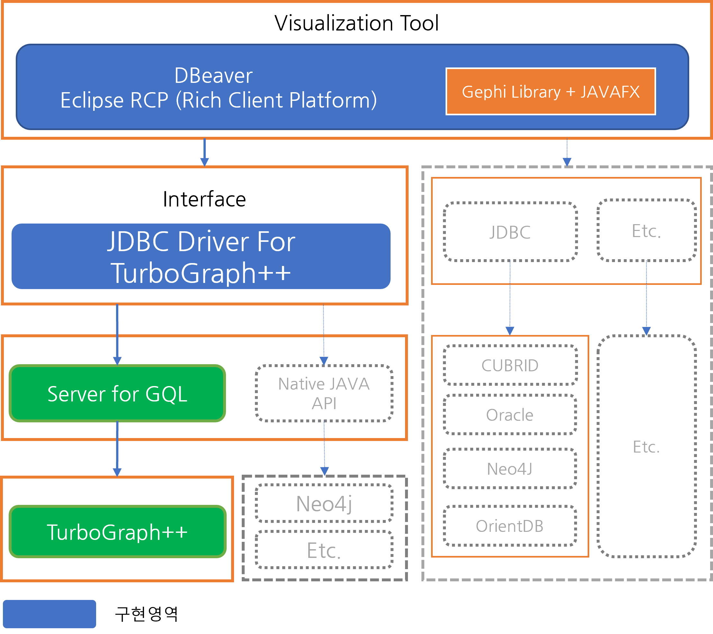
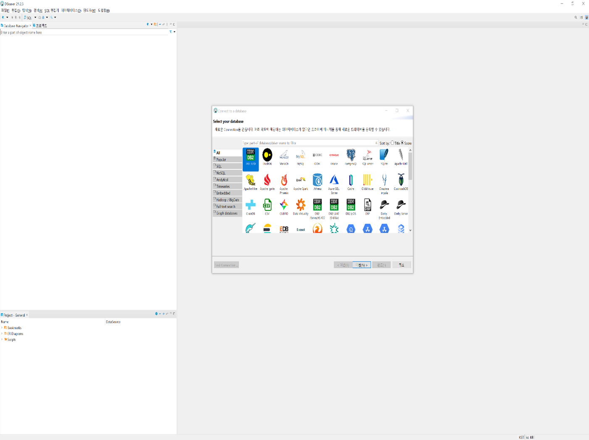
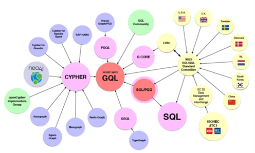
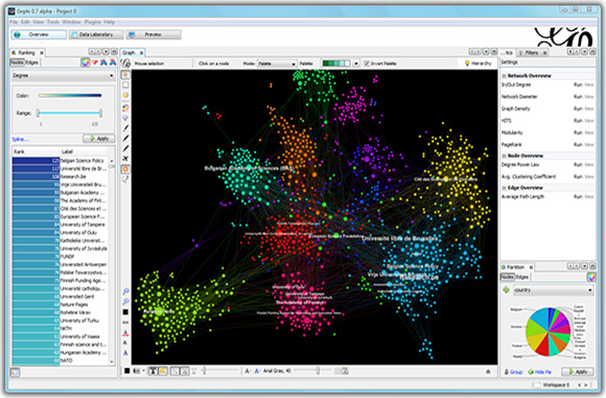
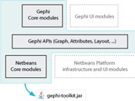

ViT(Visualization Tool) 소개¶
ViT는
- TurboGraph++ 에서 질의 결과를 받아 이를 정점과 간선으로 구성하고, 구성된 그래프의 통계를 산출하여 물리적 화면에 표시한다.
- 시각화 도구는 JAVA를 기반으로 RCP(Rich Client Platform)로 개발되어, 다양한 플랫폼에서 사용가능 하도록 한다
- Open-Source 응용 도구 및 Library를 사용하여 개발된다.
본 도구는 탐색과 분석 기능을 주 목적으로 하여 많은 양의 정보를 쉽게 분석할 수 있다. IITP-차세대 GDBMS인 TurboGraph++와 연결하여 결과를 시각화하는 것이 최종 목표이며, TurboGraph++에 GQL위한 인터페이스를 이용하여 개발한다.
ViT 구조¶
{kind=link}
본 과제의 시각화 도구는 Eclipse RCP로 개발된 DBeaver를 기반으로, 시각화 및 데이터 분석 기능을 확장한다. 시각화 기능 확장을 위해 Gephi Lib를 사용하며, 이를 통해 그래프(Graph)를 관리하고 분석한다. 관리, 분석된 데이터(Data)는 JAVAFX Lib를 이용하여 시각화 되어 물리적으로 표현된다. 기본적인 연결, 데이터 통신 등의 인터페이스(interface)부분을 표준화된 JDBC를 구현,사용하여 그래프 DBMS와 통신할 수 있도록 구조화한다. 그래프 드라이버는 TurboGraph++에서 제공하는 Server for GQL을 이용하여 TurboGraph++와 통신을 하게 된다.
관련 내용¶
DBeaver (dbeaver.io)¶
DBeaver는 다양한 DBMS을 사용하는 개발자와 데이터베이스 관리자를 위한 공개 소프트웨어(Open Source) 데이터베이스 도구이다. 기본적으로는 JDBC를 이용하여 다수에 Database와 통신하며, NoSQL등 JDBC가 불가능한 데이터베이스는 기타 드라이버를 이용하여 통신한다. 크로스 플랫폼을 지원하기 위해 Eclipse RCP로 개발되었으며, 본 과제에서는 DBeaver에 시각화 기능들을 추가하여 확장하는 형태로 개발될 예정이다.
{kind=link}
GQL (Graph Query Language)¶
GQL은 속성(Property) 그래프를 위한 질의 언어이다. SQL을 보완하기 위한 독립 실행형 그래프 질의 언어로 기존 OpenCypher, PGQL, G-CORE등에 언어에서 입증된 아이디어를 통해 공식 ISO프로젝트로 차세대 선언적 그래프 질의 표준을 개발 진행 중에 있다.
본 과제에서는 OpenCyper를 사용하며 자동 완성 기능등이 제공 될 것이다.
Gephi (gephi.org)¶
Gephi는 공개 소프트웨어 그래프 시각화 플랫폼으로 네트워크를 분석하고 대형 그래프를 시각화를 지원하는 도구이다. Gephi는 Netbeans Framework의 기본 적인 틀에 다양한 Plug-in 업데이트를 통해 개발되었다. 탐색 데이터 분석, 링크 분석하고 데이터를 필터링 할 수 있다.
본 과제에서는 Netbeans Platform과 UI Module이 제거된 Gephi Toolkit을 이용하여 Eclipse RCP환경에서 Graph를 관리하고 분석할 수 있도록 개발할 예정이다.
